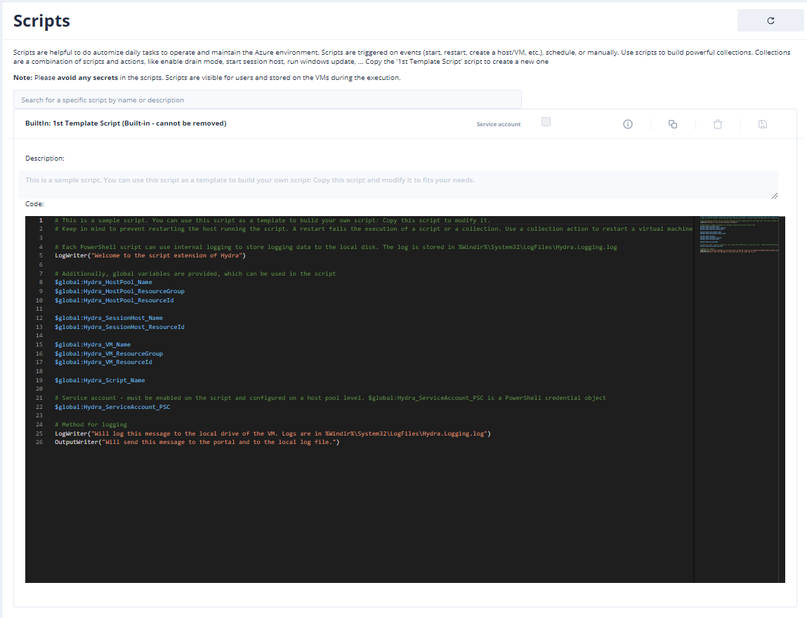
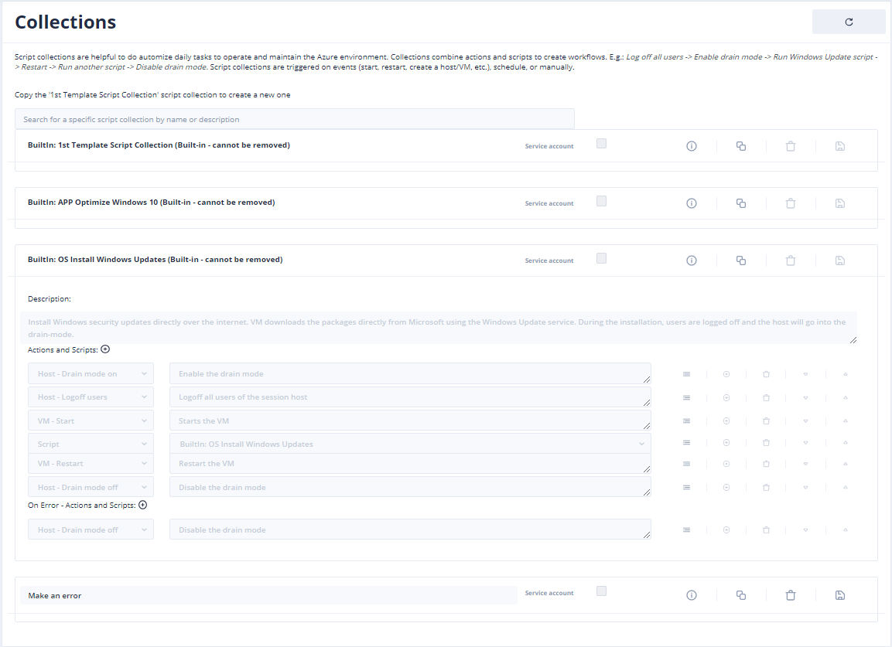
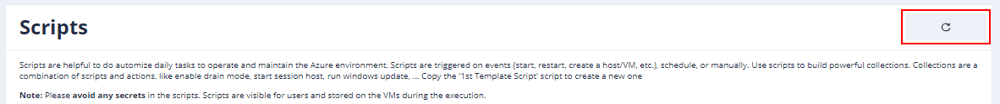
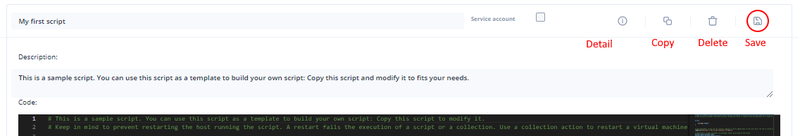
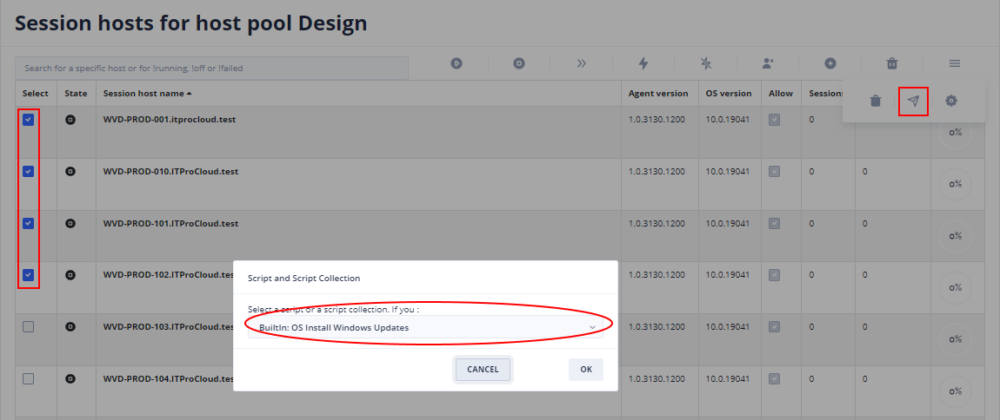
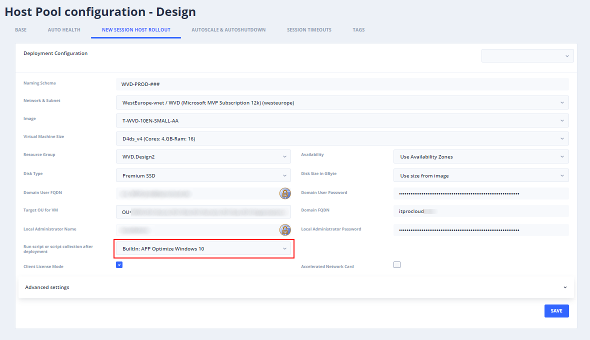
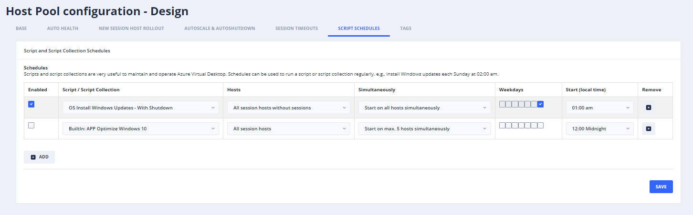

Hydra: Scripts and Script Collections for the operation and automation of Azure Virtual Desktop (AVD) / Windows Virtual Desktop (WVD)
Intro 
Project Hydra for Azure Virtual Desktop Six months ago, I started a new project to provide a solution to manage Azure Virtual Desktop / Windows Virtual Desktop in an automated way. It was thought of as a complement to #WVDAdmin and focused on doing some tasks automatically. For example:
- Autoscale – Multi-Session hosts – Power-on-connect support – Schedules – Autopilot: Automatically scales up/down/create/remove based on the usage of a host pool – Deploy hosts on-demand - including ephemeral VMs based on a custom image
- VDI – Auto deallocate session hosts
- Granular session timeouts
- Auto Health
- and a lot more
The last days, I added another essential feature to the project Hydra: Scripts and script collections. Both are intended to automize Azure VMs, and Azure Virtual Desktop (AVD) from the management perspective.
Scripts and Script Collections (Updated)
Scripts and script collections. Both are intended to automize Azure VMs, and Azure Virtual Desktop (AVD) from the management perspective.
Script
A Powershell script for a session host. The script runs in the system context with system permissions, variables containing data about the host pool, session hosts, etc. Optionally, a Powershell credential object (PSC) can be used to connect to other services, like files shares (the service account can be configured on the host pool level).

Script Collections
A script collection is a collection of scripts and tasks in any sequence. E.g.: Drain mode on -> Logoff users -> Start the VM -> Run a script -> Restart -> Drain mode off

Additionally, parameters can be set for a script, and error handling is built-in. Script collections are very useful to orchestrate several tasks and scripts to session hosts.
Built-in scripts and collections
There are several built-in scripts and collections, and new scripts and collections are provided continuously. Built-in scripts can be updated with the “Update” button in the upper-right corner.

To add a custom script or script collection, copy the “BuiltIn: 1st Template Script” or “BuiltIn: 1st Template Script Collection”. Then start building the new one. Make sure to save the new script/collection with a click of the disk symbol. There is no warning right now if you close the browser or if you navigate to another site.

Triggering a script or script collection
Scripts and script collections can be triggered by Host pool administrators and edited by Full administrators.
Both can be assigned/triggered in different ways:
For selected hosts

Automatically after the rollout of a new session host

By a schedule
Schedules can be used on a host pool level to run a script or collection unattended on session hosts of the pool. Comparable to other schedules, weekday(s) and start time define the plan. The following parameters can be used to fine-tune the schedule:
-
Hosts
-
- Run on all hosts
- Run only on hosts without user sessions
- Run only on hosts in drain-mode
-
Simultaneously
-
- Starts directly on all hosts
- Start on max. 5 session hosts at the same time (if one finished, the script/collection will be started on the next host)
- …

This example runs Windows Update on all session hosts Sunday, 1:00 am. Including drain mode, start, update, restart, drain mode off.
Install Project Hydra in your subscription: https://github.com/marcelmeurer/wvd-hydra